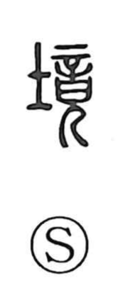

境

Uncategorized
Kun: sakai | On: kyo, kei
boundary ・ border ・ state
Explanation
A phono-semantic character: the original form is 境, with 竞 (read kyo) as its phonetic. The graph 竞 combines 音, which in ancient ritual signifies the words offered in prayer before the altar—the answering sound being the gods’ visitation—with the figure of a person. 竞 thus depicts the presentation of those prayer-words; when a divine message arrives, the rite comes to an end, giving 竞 the sense of “to conclude.” Applied to land, this notion of an ending yields the idea of the place where a territory comes to an end—the boundary. By extension, 境 also denotes a particular situation or state.